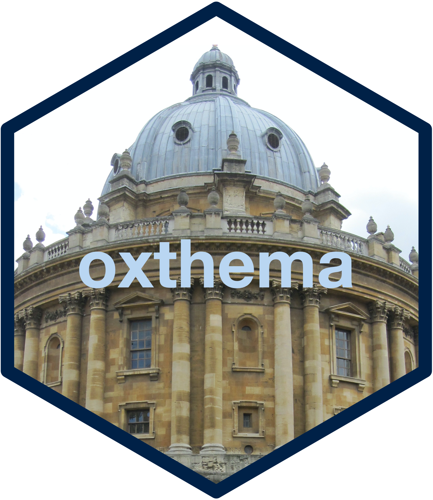

Oxford colours based on University of Oxford's visual identity guidelines
Source:R/data.R
oxford_colours.RdOxford colours based on University of Oxford's visual identity guidelines
Format
A data frame with 5 columns and 34 rows:
| Variable | Description |
| name | Official Oxford colour name |
| rgb | Three integers for the red, green, blue components of the RGB colour model |
| cmyk | Four integers for the cyan, magenta, yellow, and black components of the CMYK colour model |
| hex | Hexadecimal codes for corresponding colour |
| pantone | Pantone colour name |
Source
https://communications.web.ox.ac.uk/communications-resources/visual-identity/identity-guidelines/colours
Examples
oxford_colours
#> name rgb cmyk hex pantone
#> 1 Oxford blue 0, 33, 71 100, 87, 42, 51 #002147 282
#> 2 Oxford mauve 119, 104, 133 58, 60, 27, 10 #776885 667C
#> 3 Oxford peach 224, 141, 121 2, 58, 51, 0 #E08D79 4051C
#> 4 Oxford potters pink 237, 147, 144 0, 57, 34, 0 #ED9390 2339C
#> 5 Oxford dusk 196, 162, 158 20, 40, 31, 5 #C4A29E 6030C
#> 6 Oxford lilac 209, 189, 213 18, 30, 4, 0 #D1BDD5 524C
#> 7 Oxford sienna 153, 70, 54 25, 82, 80, 19 #994636 4036C
#> 8 Oxford CCB red 127, 5, 95 48, 100, 19, 15 #AA1A2D 187C
#> 9 Oxford plum 127, 5, 95 48, 100, 19, 15 #7F055F 2425C
#> 10 Oxford coral 254, 97, 90 0, 79, 56, 0 #FE615A 178C
#> 11 Oxford lavender 212, 205, 244 19, 22, 0, 0 #D4CDF4 2635C
#> 12 Oxford orange 251, 86, 7 0, 76, 95, 0 #FB5607 1655C
#> 13 Oxford pink 230, 0, 126 0, 100, 0, 0 #E6007E 2385C
#> 14 Oxford green 66, 106, 90 79, 35, 64, 26 #426A5A 5545C
#> 15 Oxford ocean grey 120, 158, 158 61, 22, 37, 4 #789E9E 2211C
#> 16 Oxford yellow ochre 226, 192, 68 10, 23, 93, 1 #E2C044 4016C
#> 17 Oxford cool grey 228, 240, 239 15, 0, 8, 0 #E4F0EF 7541C
#> 18 Oxford sky blue 185, 214, 242 34, 6, 0, 0 #B9D6F2 277C
#> 19 Oxford sage green 160, 175, 132 45, 19, 58, 3 #A0AF84 7494C
#> 20 Oxford viridian 21, 97, 109 92, 36, 43, 27 #15616D 5473C
#> 21 Oxford royal blue 29, 66, 166 96, 75, 0, 0 #1D42A6 2126C
#> 22 Oxford aqua 0, 170, 180 84, 0, 33, 0 #00AAB4 7710C
#> 23 Oxford vivid green 101, 229, 174 56, 0, 46, 0 #65E5AE 3385C
#> 24 Oxford lime green 149, 193, 31 54, 0, 100, 0 #95C11F 2292C
#> 25 Oxford cerulean blue 73, 182, 255 68, 11, 0, 0 #49B6FF 292C
#> 26 Oxford lemon yellow 247, 239, 102 8, 0, 69, 0 #F7EF66 3935C
#> 27 Oxford charcoal 33, 29, 28 70, 67, 61, 81 #211D1C 419 C
#> 28 Oxford ash grey 97, 97, 95 57, 46, 48, 36 #61615F 6215 C
#> 29 Oxford umber 137, 130, 122 43, 39, 43, 22 #89827A 403 C
#> 30 Oxford stone grey 217, 216, 214 17, 13, 15, 0 #D9D8D6 Cool Gray 1 C
#> 31 Oxford shell grey 241, 238, 233 6, 6, 9, 0 #F1EEE9 Warm Gray 1 C
#> 32 Oxford off white 242, 240, 240 6, 6, 6, 0 #F2F0F0 663 C
#> 33 Gold 10122C
#> 34 Silver 10103C